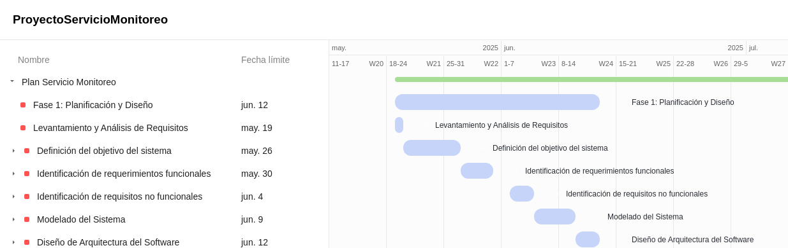
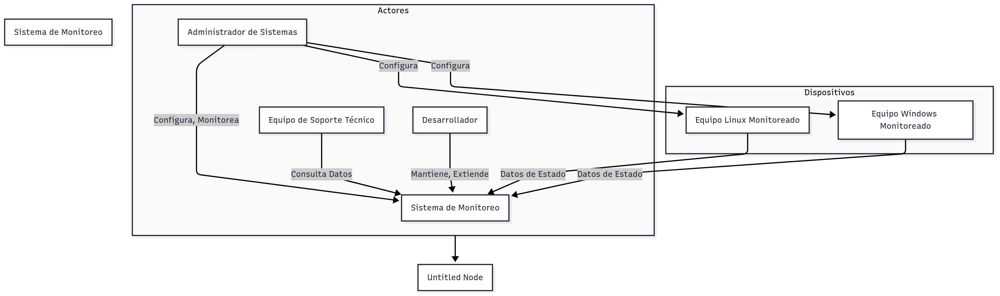
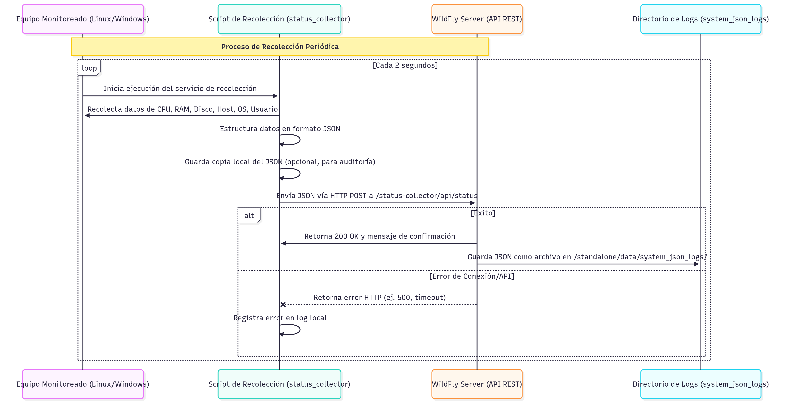

Primer Avance del Proyecto
En esta etapa se realiza el análisis inicial del contexto del sistema. Se recopila información sobre necesidades del usuario, dispositivos a monitorear, y condiciones operativas. El objetivo principal es definir el propósito y alcance del servicio de monitoreo.

Alcance
- El sistema debe recolectar datos periódicamente que indiquen el estado o estatus del equipo basado en identificar propiedades básicas del sistema .
- Por el momento el alcance solamente estará basado en dispositivos con sistemas operativos Windows y Linux.
Requerimientos operativos
- El equipo requiere de una conectividad de red.
- Requisitos minimos para ejecutar .bat o .ssh
Diagrama de esquema de actores
- Administradores del sistema estarán encargados de las configuraciones iniciales tanto para servidores como para clientes.

Diagrama de Escenarios
Identificamos los siguientes escenarios
- - Recolecta datos.
- - Crea un archivo JSON.
- - Genera una copia local y envía una al servidor.
- - Del lado del servidor se tiene tecnología HTTP POST, se trabajó con una API REST porque tenemos una plataforma Wildfly.

Declaración del objetivo técnico del sistema
La funcionalidad se centra en la recolección y almacenamiento del estatus del sistema
- - Un servicio web que nos permita la recolección.
- - Un hub centralizado en la recolección de datos tanto en linux como en Windows.
- - Por la viabilidad de las tecnologías este API está desarrollado en java REST. Esta funcionalidad se centra en que recibirá, procesará y almacenará información.